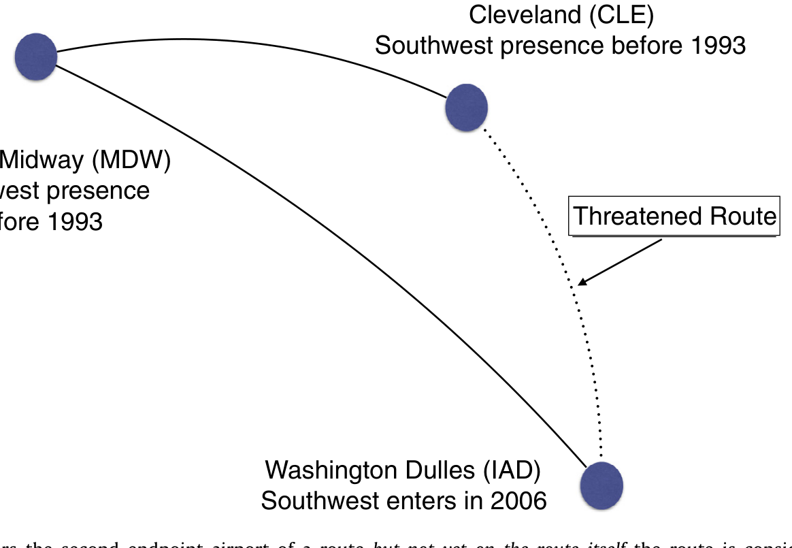
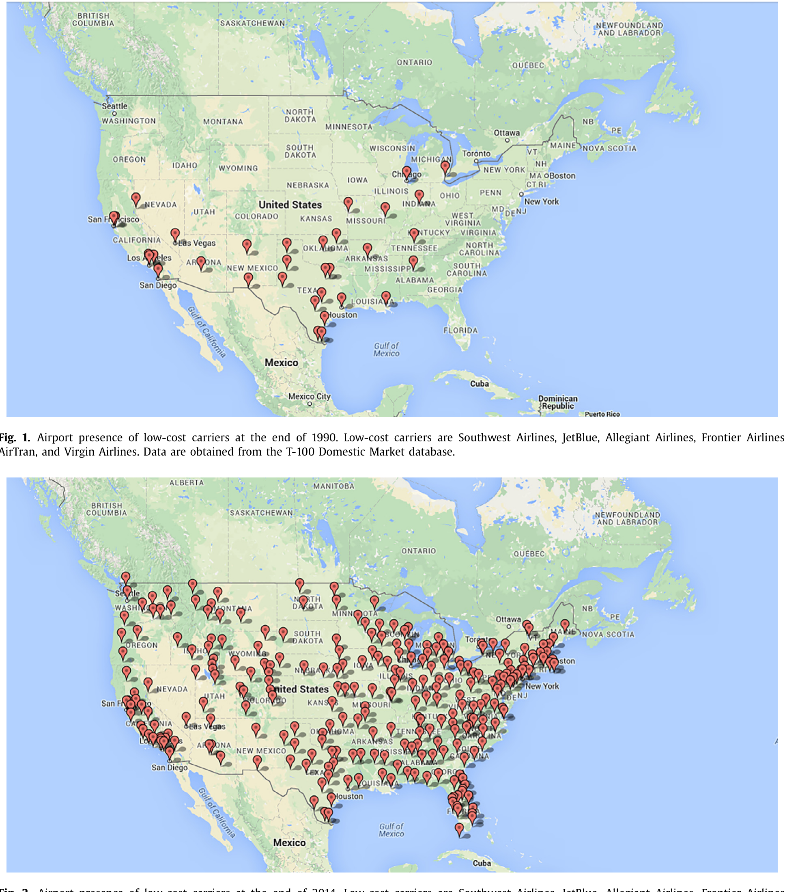
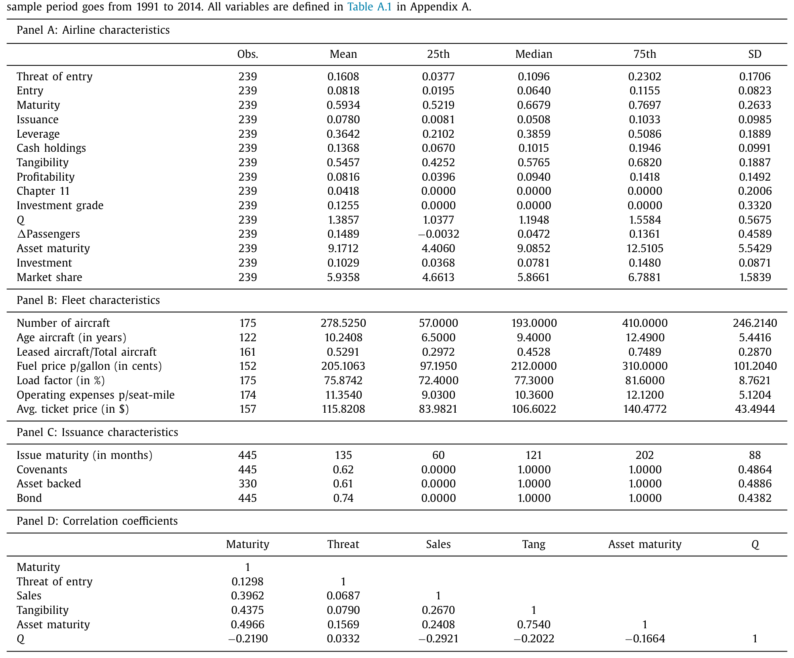
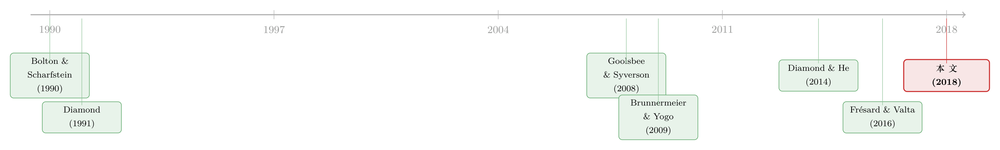

威胁还没来，债先「续」上了——航空公司如何为一场尚未发生的价格战提前锁定长债
本文读的是 Parise (2018, Journal of Financial Economics)：当低成本航空的扩张让一条航线「即将被攻入」时，在位航空公司会赶在对手真正杀进来之前，把债务期限拉长——一个标准差的进入威胁，对应长期债务占比上升 6.0 个百分点。它们用「先锁好长债」来对冲滚动风险，却几乎不动杠杆。
1 引言：还没开打，先把弹药囤好
先讲一个画面。2006 年 10 月，西南航空（Southwest）开始从华盛顿杜勒斯机场（IAD）起飞。但奇怪的是，它并没有立刻去飞 杜勒斯（IAD）—克利夫兰（CLE）这条航线——而克利夫兰也是西南的据点。换句话说，西南已经站在了这条航线的「两个端点」上，却迟迟没有把它们连起来。
如果你是这条航线上的在位者，你会怎么想？
你几乎可以确定：西南要来了。事实也是如此，它在 2007 年开通了这条航线。问题在于——在那之前的那一年，你应该做什么？
这就是本文要回答的问题。一个深入人心的常识是，财务结构决定了一家公司能否在激烈竞争中活下来：「财大气粗」的公司会想办法把财务受限的对手挤出市场（Telser, 1966；Bolton and Scharfstein, 1990），而高杠杆的在位者在竞争环境里更容易倒下（Zingales, 1998）。顺着这个逻辑往前推一步，一个自然的推论是：如果公司预见到未来竞争会变得更残酷，它今天就应该提前调整自己的财务结构。
可问题来了——具体怎么调？这件事其实远没有听上去那么显然。已有研究告诉我们，杠杆率是高度持久的（Lemmon et al., 2008），想动它并不容易；而囤着一大笔现金又很贵（Jensen, 1986；Holmström and Tirole, 2000）。于是本文盯上了一个更灵活、也更少被关注的维度：债务期限 (debt maturity)。
2 两个假设，一个分岔口
为什么是期限，而不是别的？这里有一条清晰的理论暗线。
短债有它的好处：它提高财务灵活性、向债权人传递「我项目质量高」的信号（Flannery, 1986）、降低代理成本（Myers, 1977），而且债权人偏爱短债（Brunnermeier and Oehmke, 2013）。但短债也有一个致命软肋——它逼着你频繁地去借新还旧。一旦坏消息到来、而你恰好撞上一个再融资窗口，你可能借不到钱：这就是滚动风险（rollover risk，又称再融资/流动性风险）。它会推高信用风险（He and Xiong, 2012；Nagler, 2015）、放大债务积压问题（Diamond and He, 2014）、削弱投资（Almeida et al., 2012）。
于是本文给出第一个、也是核心的假设：
假设 I：面对进入威胁，航空公司会拉长债务期限。
直觉是：当频繁再融资可能导致代价高昂的滚动失败时，在位者应当牺牲短债的好处、换取更低的滚动风险——在坏消息（对手杀入）到来之前，把长期融资先锁定好（Brunnermeier and Yogo, 2009）。
但等一下——如果担心被竞争挤垮，直接降杠杆不是更直接吗？这就是本文特意拿来做对照的假设 II：航空公司用减少负债（发股或赎债）来应对威胁。
文章给出了一连串理由，说明为什么调期限比调杠杆更现实：第一，发行成本让多数公司不愿频繁优化资本结构（Strebulaev, 2007；Danis et al., 2014），而按啄食顺序理论（pecking order theory），发股的成本更高；第二，在对手进入引发违约时发股，实际上是把价值从股东转移给了债主（债先于股），这让发股事前更贵（He and Xiong, 2012）；第三，很多公司盯着严格的负债权益比目标，却几乎没人设「期限目标」（Graham and Harvey, 2001）；第四，发新债新股都要时间，而应对威胁是与时间赛跑的事——相比之下，每年都有一部分存量债到期、需要发新债来替换，债务期限结构因此天然更灵活。
最后还有假设 III：越是暴露在滚动风险下的公司（低质量、投机级、融资受限），越会主动去拉长期限（Diamond, 1991a）。高质量公司本来就该一直借短债，因为它们几乎没有滚动风险敞口。
三个假设摆在这里，剩下的全看数据怎么说。但在那之前，真正关键的一步，是怎么把「威胁」这件虚无缥缈的事变成一个可以观察、可以测量的变量。
3 识别策略：把「还没发生的事」拍成一张快照
实证上最难的，恰恰是「威胁」本身——它是一种预期，看不见摸不着。一旦对手真的进来了，那就不是威胁，而是既成事实。怎么捕捉那个「山雨欲来」的时刻？
本文沿用 Goolsbee and Syverson (2008) 的巧思（关于竞争与贴现率如何互相喂养，可顺带参见《高贴现率，为什么会逼着对手「打价格战」？》）。核心观察是：低成本航空的网络扩张是可预测的。它们倾向于先在某个机场扎根，再逐步把已经运营的两个端点连成航线。于是就有了那个「西南站在两个端点上、却还没飞中间」的时刻——
当一家低成本航空开始在某条航线的第二个端点机场运营（它早已在另一端运营），但尚未开通连接两端的航线本身时，这条航线就被定义为「处于威胁之下」。

Figure 3: When a low-cost carrier enters the second endpoint airport of a route but not yet on the route itself the route is considered under threat s
这个定义之所以漂亮，是因为它给出的预测力是实打实的。本文证明：在某航线第二个端点机场于 t 年被进入之后，次年该航线被真正进入的概率上升 25 个百分点——而无条件概率还不到 2%；未来三年内被进入的概率上升 36 个百分点（西南航空的估计；不同低成本航空有差异，最低的是 AirTran 的 12/18 个百分点，最高的是维珍美国的 34/65 个百分点）。
威胁不仅可信，而且代价惨重：本文用 10% 的随机售票样本显示，低成本航空真正进入后，航线的平均票价下跌 7.3%——而整个航空业的平均利润率只有区区 1%。这意味着，一条航线一旦被攻陷，在位者的利润几乎会被瞬间抹平。这么大的冲击，足以解释为什么航空公司有动机在事前就动起来。
有了航线层面的威胁，最后一步是加总到公司层面：把每条航线的威胁，按该航线上的客运量加权，构造出一个航空公司层面的「进入威胁（threat of entry）」指标——它衡量的是，这家航空公司有多大比例的市场，正暴露在低成本对手「很可能进入」的阴影里。
二十多年间，低成本航空的版图扩张得有多猛？下图给出了 2014 年底的机场覆盖，对照 1990 年（图 1）几乎是从零星几点铺成了一张密网——这正是本文识别变异的源头。

Figure 2: Airport presence of low-cost carriers at the end of 2014. Low-cost carriers are Southwest Airlines, JetBlue, Allegiant Airlines, Frontier Ai
4 数据：30 家公司，却覆盖八成客流
本文的数据来自多个源头拼接：美国交通部的 Form 41 强制申报（覆盖 1990–2014 年所有运营/已停业的美国国内航空公司，无选择性偏差）、Compustat 北美年度基本面、Compustat 行业专项、记录航线与客运量的 T-100 Domestic Market 数据集，以及债券发行的 Mergent 和贷款的 Dealscan。
样本的「漏斗」值得一提：Form 41 里有 140 家航空公司，但与 Compustat 按公司名匹配后只剩 30 家客运航空（384 个观测），进一步要求所有关键财务变量齐全后，落到 239 个观测。样本虽小，却覆盖了超过 80% 的国内客运量——美国大量航空公司是不在 Compustat 里的私营区域性航空。
观测单位是「公司—年」。被解释变量 Debt maturity 定义为到期期限超过三年的债务占比（沿用 Barclay and Smith, 1995；Billett et al., 2007 等）。几个值得记住的数字：样本里平均有 59% 的债务在三年以上到期（中位数公司 67%），平均账面杠杆约 36%（约为制造业研究的两倍）、现金 14%、有形资产高达 55%（制造业仅 25%）。平均而言，在位者有 16% 的市场处于进入威胁之下——但这个数字在公司间、年份间波动极大。

Table 1
值得注意的是，进入威胁与债务期限的相关系数为 13%；而进入威胁与几乎所有其他公司层面财务变量的相关系数都低于 10%（仅资产期限是例外）。这在一定程度上缓解了「威胁本身只是被在位者特征所驱动」的内生性担忧——毕竟威胁主要来自对手的扩张节奏，而非在位者自己的财务状况。
5 主要结果：先续债，不减杠杆
现在可以把三个假设拿来对账了。
先看核心结论。 进入威胁每上升一个标准差，在位航空公司的长期债务占总债务比例就上升 6.0 个百分点——相对于约 60% 的基准水平，这是 10% 的提升。注意时点：这一切发生在实际进入之前。在位者就像那条 IAD–CLE 航线上的对手们，看到西南站上了两个端点，便抢先一步把自己的债「续」得更长。假设 I 成立。
再看横截面，这是最有说服力的一笔。 这个效应在两类公司里格外强：债务评级为「投机级（speculative grade）」的，以及融资受限（financially constrained）的——它们恰恰是平时最难拿到信贷、也最暴露在滚动风险下的公司。这正是假设 III 的预测：高质量公司本就该一直借短债、无需操心，真正会去抢长债的，是那些一旦撞上再融资窗口就可能借不到钱的脆弱者。
接着是关于「怎么续」的细节。 本文另建了一个债务发行的数据集，发现受威胁的航空公司发行的债务工具期限更长；而且一个有意思的反转是——虽然航空公司总体上更倾向于发债券，但受威胁时，它们主要是通过贷款（loans）而非债券来拉长期限。
最后是那个关键的「非结果」。 进入威胁对杠杆没有显著影响。假设 II 不成立。 为什么？因为航空公司的资本结构高度持久，往往不会逐年调整（它取决于在手的实物资产，或盯着严格的负债权益比目标）；而再融资周期相对较短，让公司可以更频繁地调整债务的「构成」。换句话说，杠杆是一艘难掉头的巨轮，期限却是船上可以随时调整的帆。这一点和资本结构里「调结构比调比例容易」的发现遥相呼应（Rauh and Sufi, 2010；Colla et al., 2013）。
把这三块拼起来，故事就完整了：在位者不是去减少负债的总量，而是在对手压境之前，悄悄把债务的「保质期」延长，以此换取更低的滚动风险。 这恰恰是那一类「在坏消息来临前就锁定长期融资」的理论模型所预测的最优行为（Diamond, 1991a；Brunnermeier and Yogo, 2009；Diamond and He, 2014）。
（顺带一提：把「期限」与资产年龄、滚动激励放在一起看，会有更立体的图景——可参见《飞机要换，债也要「换」：把「期限匹配」拆回资本的年龄》与《短债真的能「管住」股东吗？——一个关于「滚动陷阱」的反转》。）
6 文献脉络
这篇论文坐落在三条河流的交汇处。
第一条是滚动风险这条逐渐壮大的支流。早年 Diamond (1991a) 就指出，债务期限结构是公司管理流动性风险的工具，低质量公司应当主动去借长债。金融危机后，Brunnermeier and Yogo (2009) 给出了「在坏消息来临前锁定长债」的简洁刻画，He and Xiong (2012)、Diamond and He (2014) 则把滚动风险与信用风险、债务积压正式连了起来。但这一脉几乎全是理论预测——本文是为「公司应在预期负面冲击时管理滚动风险」这个命题，提供首个经验证据的尝试。
第二条是资本结构的决定因素。多数研究盯着股—债之争，把债当成同质的一块；而 Rauh and Sufi (2010)、Colla et al. (2013) 这一支转而强调债务内部的异质性与可调性。本文的贡献，是把「进入威胁」加进了债务期限的决定因素清单里。
第三条是产品市场竞争与公司决策。从 Chevalier (1995)、Zingales (1998) 对「当下竞争」的研究，到 Goolsbee and Syverson (2008)、Frésard and Valta (2016)、Cookson (2017) 这一批转向「竞争威胁」的工作——本文的独特之处，在于它聚焦于实际进入决策做出之前的那段「预期窗口」，并据我所知是第一篇研究低成本对手的竞争威胁如何影响债务期限结构的论文。

7 评论与延伸（Q&A + 研究方向）
(a) 几个可能的疑问
Q：这到底算不算因果识别？「威胁」会不会只是反映了在位者自己快不行了？
这是核心担忧。本文的防线有两层：一是变异来源是对手的网络扩张节奏（先占两个端点、再连航线），而非在位者的财务状况；二是进入威胁与几乎所有在位者财务变量的相关系数都低于
10%（除资产期限外）。这让「威胁是内生于在位者特征」的解释变弱，但并未完全排除——低成本航空选择进入哪些机场，本身可能并非随机。
Q：为什么是债务期限，而不是直接降杠杆？后者不是更能防被挤垮吗？
数据说杠杆纹丝不动、只有期限在动。原因在「可调性」：杠杆高度持久、受实物资产和负债权益比目标约束，而每年总有一部分债到期需要替换，期限结构因此远更灵活；加上发股事前会把价值送给债主、发行成本又高，调期限就成了那个时间上来得及、成本上付得起的选项。
Q：拉长期限不是更贵吗？为什么说这是「最优」的？
长债确实通常要付溢价（关于这一点，可参见《同一笔杠杆，凭什么「长债」的公司要多付 0.21%？》）。本文的逻辑是一笔权衡账：当滚动失败的代价足够大（票价瞬间跌
7.3%、利润率本就只有1%），多付的期限溢价相比「在对手进攻时借不到钱被迫贱卖资产」要便宜得多。
Q：为什么主要靠贷款、而不是债券来拉长期限？
本文报告了这个事实但留有讨论空间。一个合理的解释是，贷款更易再谈判、能更快地针对「特定目的」调整期限，而债券发行涉及分散的债权人、调整更慢——在与时间赛跑的威胁面前，贷款的灵活性更对胃口。
Q：航空业这么特殊，结论能外推到别的行业吗？
要小心。航空业被选中正因为它「同质、低毛利、易受低成本冲击」，且威胁可观察——这既是识别的优势，也是外部有效性的代价。而且航空公司有形资产占
55%、杠杆36%，都远高于制造业，期限—资产匹配的逻辑在这里格外强。换个资产更轻的行业，效应未必同样清晰。
Q：进入威胁是「持久」冲击，这和经典滚动风险框架有何不同？
这是本文一个细腻的点。多数滚动风险研究聚焦于临时性的信贷紧缩；而低成本对手的进入是相对持久的环境恶化。在一个永久变残酷的环境里，要完全消除滚动风险就得让债务期限完美匹配资产期限——但可得的最长期限受限于债权人对短债的偏好，于是均衡里在位者只能「在债权人愿意提供的最长期限上」发债（Diamond, 1991a）。
(b) 几个可能的研究问题与提案
1. 把同一逻辑搬到公司债市场，看「外资持有人」的进入威胁。 【经济故事】当一国信用债市场预期将迎来外资（或大型被动基金）的进入/扩张时，在位发行人是否也会提前拉长债务期限以对冲未来的再融资环境变化？机制与本文同构，但「威胁」换成了资金端而非产品端。 【可行性】中。需要外资持仓的细颗粒数据（如 TIC、各国央行持仓）加上债券层面的发行期限（Mergent FISD），识别上可借鉴本文「对手先到邻近市场、尚未进入本市场」的思路，但外资进入的可预测性弱于航线扩张，工具变量更难找。
2. 进入威胁 → 债券的二级市场流动性。 【经济故事】如果受威胁的在位者主要靠贷款拉长期限，那它们存量债券的流动性与利差会如何反应？滚动风险上升理论上应推高利差（He and Xiong, 2012），但「先锁长债」的对冲又可能反向缓释。 【可行性】高。TRACE 的逐笔交易数据 + 本文的威胁指标即可构造检验，识别沿用本文框架，结论可直接对话「滚动风险定价」文献。
3. 威胁的「非对称」反应：进攻者 vs 防守者。 【经济故事】同一条航线，既有被威胁的在位者，也有正在扩张的低成本航空。低成本航空自己的债务期限选择是否相反——它们会不会反而偏好短债以保持进攻灵活性（Brunnermeier and Yogo, 2009）？ 【可行性】中。需要把低成本航空也纳入财务样本（部分是上市公司，可得 Compustat），但低成本航空数目有限，统计功效是瓶颈。
4. 用债务期限的事前调整，预测谁能在进入后「活下来」。 【经济故事】本文止步于「威胁→拉长期限」，但没回答这步操作是否真的提高了存活率。提前续好长债的在位者，在对手实际进入后是否更少退出该航线、更少违约？ 【可行性】高。本文已有进入事件与退出/财务困境的数据，做一个事后存活分析即可，识别上需控制选择（愿意且能够拉长期限的公司本身更强）。
我的判断
这篇论文最漂亮的地方，是它把一个抽象到几乎无法测量的概念——「对未来竞争的预期」——用航线网络的几何结构，硬生生拍成了一张可观察、有预测力的快照（次年进入概率 +25 pp）。这个识别设计本身就值得反复琢磨。而它在实证上同时验证了「调期限」、否证了「调杠杆」，并把效应精准地落在投机级与融资受限的公司上，三块证据彼此咬合，讲出了一个干净的滚动风险故事，也为一整条「事前管理再融资风险」的理论文献补上了久缺的经验一脚。
对识别我仍有两点保留：其一，低成本航空进入哪个机场并非随机，它们可能正是冲着那些「财务上已显疲态、即将让出市场」的在位者而来——果真如此，威胁与在位者特征的低相关只是必要而非充分的辩护；其二，样本只有 239 个「公司—年」观测、30 家公司，横截面异质性结果的稳健性值得多看几眼。
我接下来最想看到的，是把这步「事前续债」与事后结果连起来：那些抢先锁定长债的在位者，在对手真正杀入后，是不是真的更扛得住价格战、更少违约？如果答案是肯定的，这篇文章就从「公司这样做了」升级成「这样做是对的」——那才是把滚动风险理论彻底钉死的最后一锤。
参考文献
- Barclay, M.J., Smith, C.W. (1995). The maturity structure of corporate debt. The Journal of Finance 50(2), 609–631.
- Billett, M.T., King, T.-H.D., Mauer, D.C. (2007). Growth opportunities and the choice of leverage, debt maturity, and covenants. The Journal of Finance 62(2), 697–730.
- Bolton, P., Scharfstein, D. (1990). A theory of predation based on agency problems in financial contracting. The American Economic Review 80(1), 93–106.
- Brunnermeier, M.K., Oehmke, M. (2013). The maturity rat race. The Journal of Finance 68(2), 483–521.
- Brunnermeier, M.K., Yogo, M. (2009). A note on liquidity risk management. The American Economic Review Papers and Proceedings 99(2), 578–583.
- Colla, P., Ippolito, F., Li, K. (2013). Debt specialization. The Journal of Finance 68(5), 2117–2141.
- Cookson, J.A. (2017). Leverage and strategic preemption: lessons from entry plans and incumbent investments. Journal of Financial Economics 123, 292–312.
- Diamond, D.W. (1991a). Debt maturity structure and liquidity risk. The Quarterly Journal of Economics 106(3), 709–737.
- Diamond, D.W., He, Z. (2014). A theory of debt maturity: the long and short of debt overhang. The Journal of Finance 69(2), 719–762.
- Flannery, M.J. (1986). Asymmetric information and risky debt maturity choice. The Journal of Finance 41(1), 19–37.
- Frésard, L., Valta, P. (2016). How does corporate investment respond to increased entry threats? Review of Corporate Finance Studies 5, 1–35.
- Goolsbee, A., Syverson, C. (2008). How do incumbents respond to the threat of entry? Evidence from the major airlines. Quarterly Journal of Economics 123(4), 1611–1633.
- Graham, J.R., Harvey, C.R. (2001). The theory and practice of corporate finance: evidence from the field. Journal of Financial Economics 60(2), 187–243.
- He, Z., Xiong, W. (2012). Rollover risk and credit risk. The Journal of Finance 67(2), 391–430.
- Lemmon, M.L., Roberts, M.R., Zender, J.F. (2008). Back to the beginning: persistence and the cross-section of corporate capital structure. The Journal of Finance 63(4), 1575–1608.
- Myers, S.C. (1977). Determinants of corporate borrowing. Journal of Financial Economics 5(2), 147–175.
- Parise, G. (2018). Threat of entry and debt maturity: evidence from airlines. Journal of Financial Economics 127(2), 226–247.
- Rauh, J.D., Sufi, A. (2010). Capital structure and debt structure. Review of Financial Studies 23(12), 4242–4280.
- Zingales, L. (1998). Survival of the fittest or the fattest? Exit and financing in the trucking industry. The Journal of Finance 53(3), 905–938.